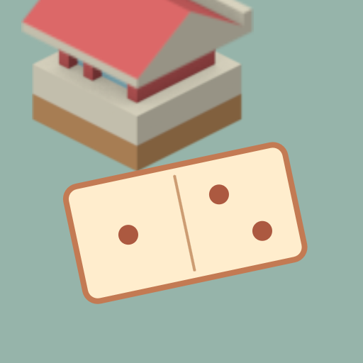

<- all projects

Domino District
PC
Volume
Live
Place a domino. Build a neighbourhood.
Sol has a map full of empty lots and a neighborhood full of ideas. Place dominoes to meet each block's requests and watch a welcoming little city take shape. In each solo puzzle you use every piece once, cover every square and make each row and column add up to its total, with totals updating as you place. Later rules add double lots, equal seams between pieces and balanced districts with their own total. Undo is always free and there is no timer. Solve 160 boards as five chapters add a building and a story to your city map, plus a daily neighborhood and 90 optional ones.